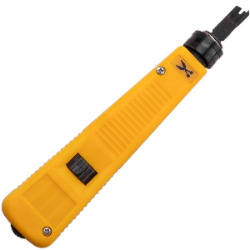

Crimpadora de Impacto
Herramienta utilizada para terminar y asegurar cables en conectores modulares, especialmente en conexiones de redes y telecomunicaciones. Funciona aplicando presión y un golpe de impacto para insertar y fijar los conductores del cable en el conector, asegurando una conexión firme y confiable. Es esencial para la instalación y el mantenimiento de sistemas de cableado estructurado.
